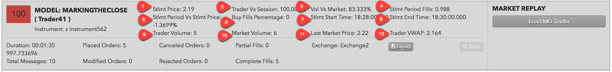
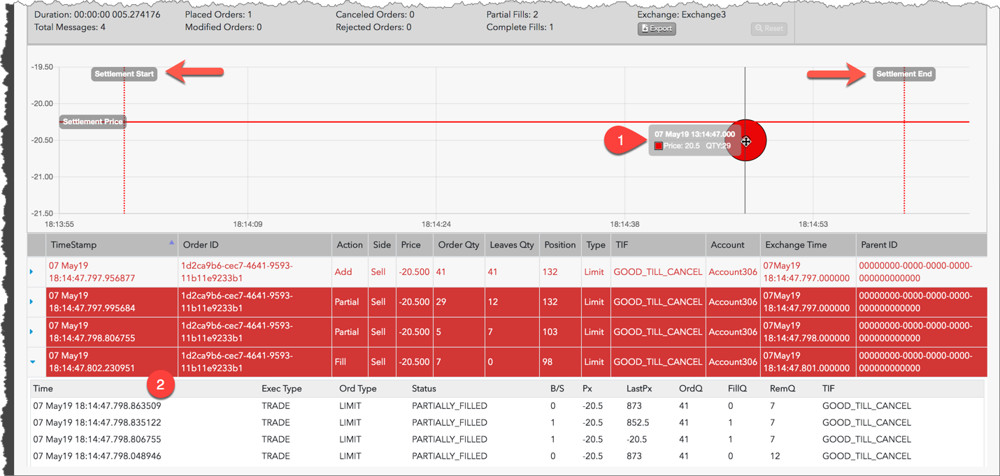

Marking the Close is a pattern of trading activity intended to manipulate the settlement price of an instrument during its settlement period. The Marking the Close beta model in TT Score detects potential settlement price manipulation in select CME outrights and spreads, and identifies on-exchange activity during settlement periods that may have influenced the settlement price for the most commonly traded CME products.
Note: TT Score highlights suspicious trading for both spreads and outrights in the same product. Some multileg instruments can impact the settlement price of its outrights depending on the type of instrument or the expiration months involved.
Scoring methodology
To detect a trader's potential Marking the Close trading activity, TT Score analyzes the following data during the settlement period:
- The price of an instrument before settlement and its eventual settlement price.
- Orders that comprise a large percentage of orders in the market.
- Trades that occurred mostly on the same side of the market.
- A trader's activity during the settlement period in proportion to their activity during the entire trading session.
Score interpretation
The score assigned to a cluster is based on a sliding scale between 0-100 using a weighted calculation. A score of 75 and above is a good indication that the suspect trading activity occurred.
{% include score-method.html %}
Scorecard metrics
The Marking the Close cluster scorecard includes metrics that help you determine if price manipulation may have occurred during the instrument's settlement period.

The following metrics are provided:
-
Stlmt Price — The daily settlement price reported by the exchange.
-
Trader Vs Session — This is the percent of the trader’s total activity for the day that occurred during the instrument's settlement window. A high percentage of activity by the trader during the small settlement window may indicate a trader targeted the settlement window in an attempt to affect the settlement price.
-
Vol Vs Market — Shows the trader's settlement volume as a percentage of the total settlement volume. A higher percentage of volume may indicate that the trader’s activity had a greater impact on the eventual settlement price.
- Stlmt Period Buy/Sell Fills — Displays the VWAP of the fills on the suspect side of the market: buy fills for upward price movement over the settlement price, or sell fills for downward price movement below the settlement price.
-
Stlmt Period Vs Stlmt Price — Shows the last market price of the instrument prior to the settlement period compared to the settlement price. This gives you an approximation of how much the price moved up or down during the settlement period. Calculated as a ratio of settlement price before/during the settlement period.
-
Buy Fills Percentage — Displays the percent of fills that the trader had on the buy side of the market during settlement. Note that a "1" indicates that all of the trader’s fills were on the buy side, while a "0" indicates that the trader only had fills on the sell side.
-
Stlmt Start Time — The Settlement start time and end time set and published by the exchange. Fills that occurred during this time window are typically used to calculate the settlement price of an instrument or related product.
- Stlmt End Time — The Settlement start time and end time set and published by the exchange. Fills that occurred during this time window are typically used to calculate the settlement price of an instrument or related product.
- Trader Volume — Total trader volume during settlement. A high total volume may indicate that the trader’s activity had a greater impact on the eventual settlement price.
- Market Volume — Total market volume during settlement.
- Last Market Price — The last market price prior to the settlement period.
- Trader VWAP — The trader settlement period VWAP.
Identifying Marking the Close
In addition to the scorecard metrics, the Marking the Close chart and audit trail can also help identify Marking the Close trading activity. The following image shows results from inspecting a Marking the Close trading cluster.

When investigating Marking the Close clusters in TT Score, check for the following indications of potential price manipulation:
- In the chart, look for a high percentage of buys above the settlement price or sells below the settlement price within the settlement period. You can move the cursor over suspect trading markers between the settlement period start and end times to view the price, quantity, and time of the trade.
-
In the audit trail, check if the fills were for aggressive orders entered during the pre-close settlement period or passive orders resting in the market before or during the settlement period. Click a row in the audit trail to expand it and view additional order and fill details.